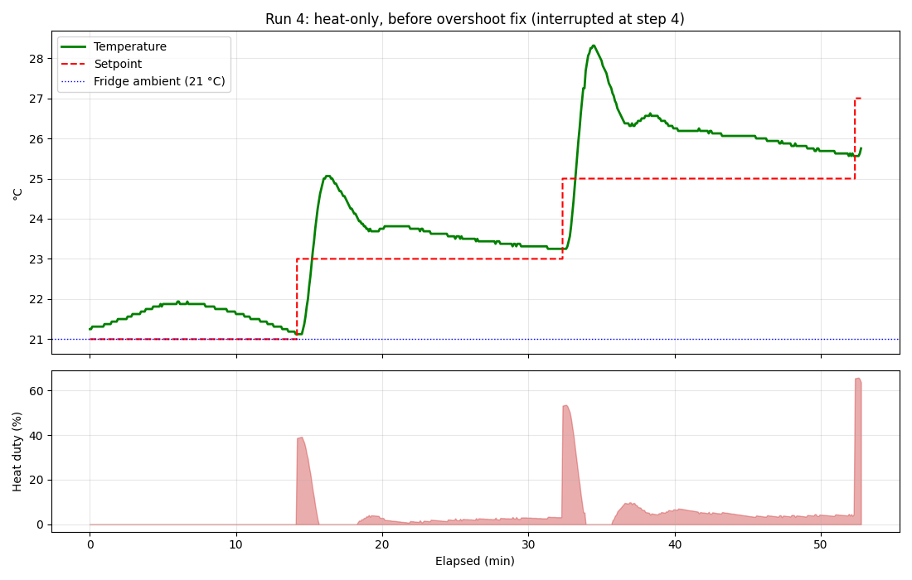
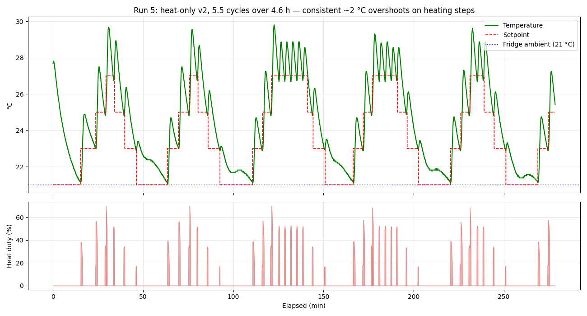
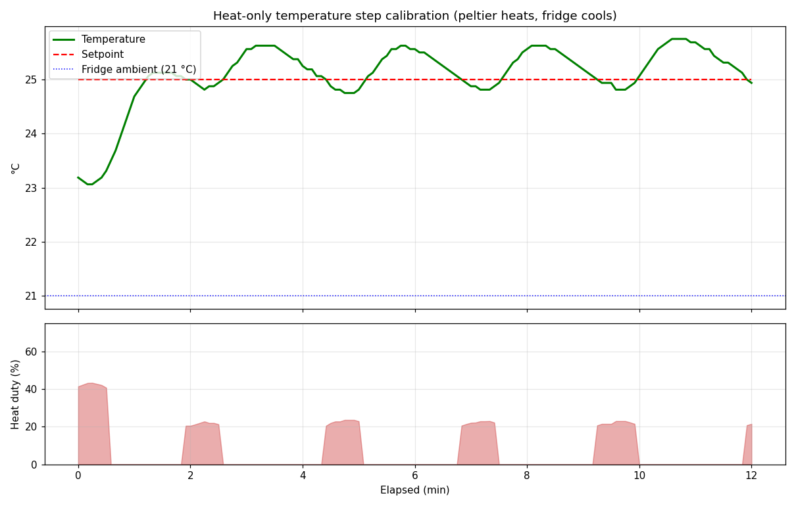
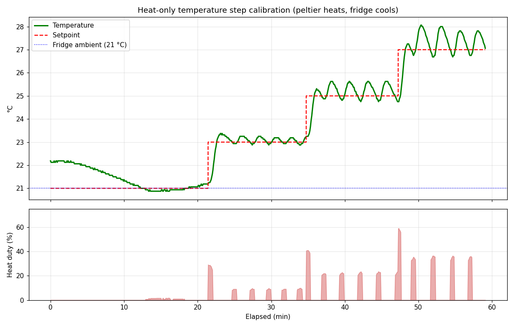
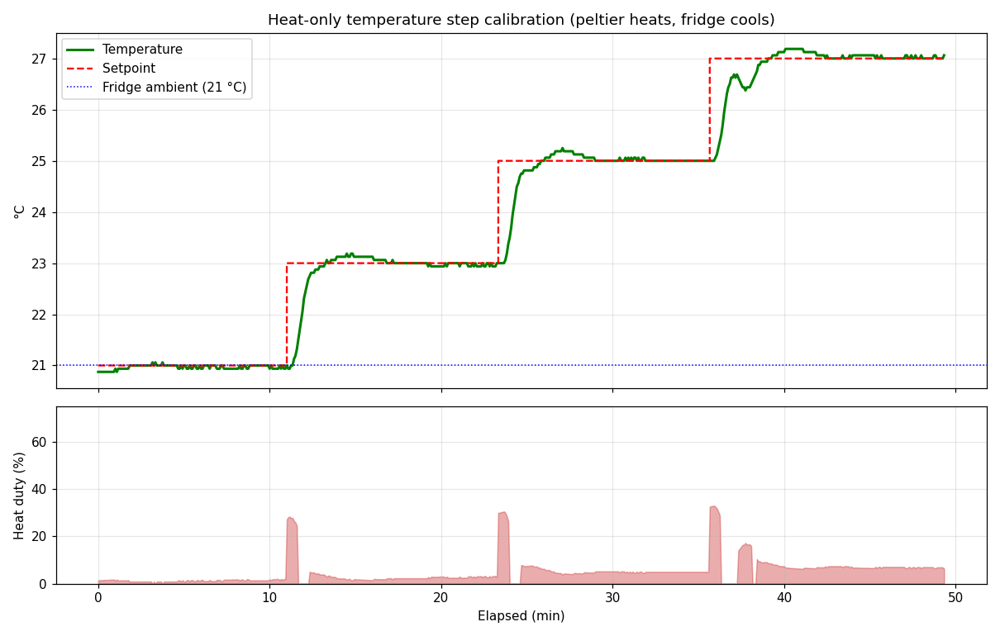
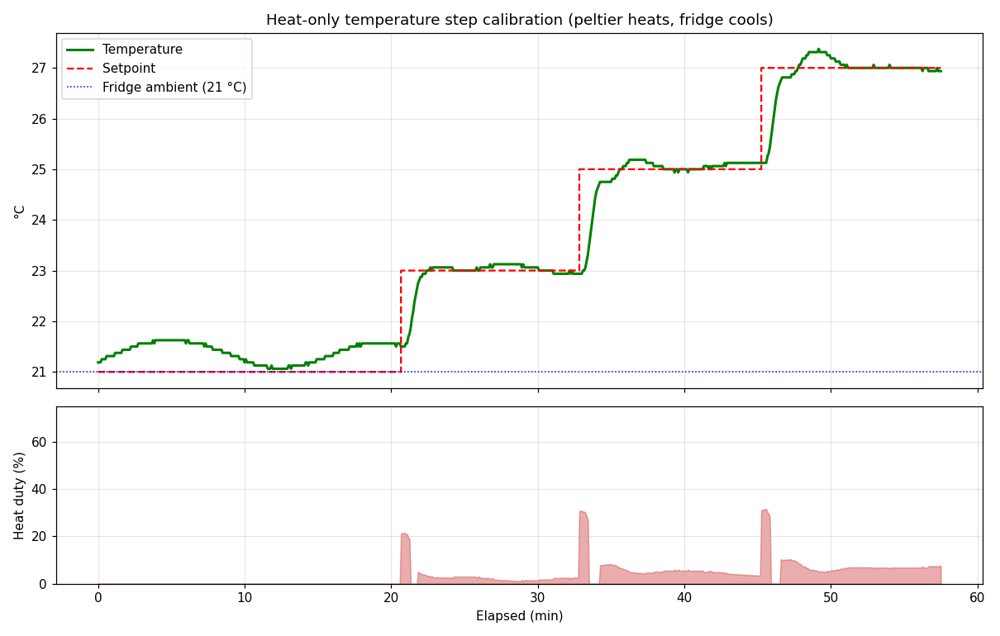
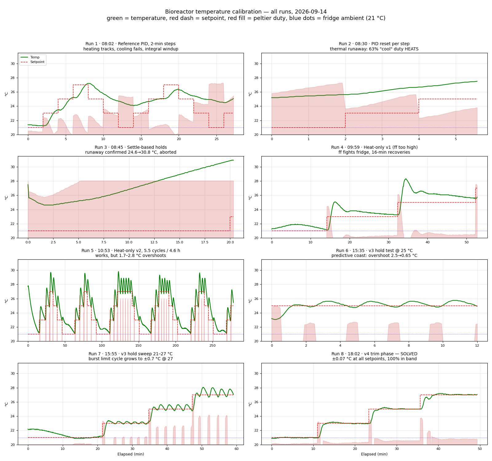
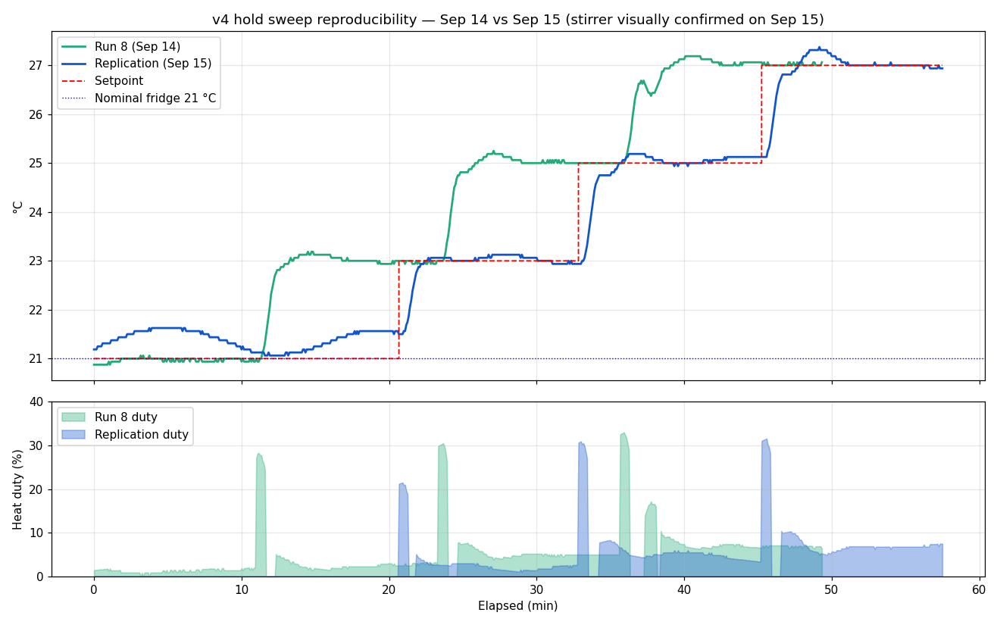

Temperature calibration of the algae bioreactor
The runs, in order
Each plot is one run of the step test: setpoint and measured temperature on top, peltier duty below. Fridge ambient is 21 °C.

20260914_095939_temp_steps.csv
20260914_105305_temp_steps.csv
20260914_153503_temp_steps.csv
20260914_155511_temp_steps.csv
20260914_180224_temp_steps.csv
20260915_105945_temp_steps.csv

Findings
The write-up below is the FINDINGS.md kept alongside the data on the Pi, reproduced as-is.
Temperature Step Calibration — Findings (2026-09-14)
Test
Oscillate setpoint 21 → 23 → 25 → 27 → 25 → 23 °C (2 °C steps, 2 min holds,
repeating) using the bioreactor_v3 reference PID
(temperature_pid_controller, kp=12, ki=0.015, kd=0, 5 s period, 70% max duty)
driving the peltier, stirrer at 30%, DS18B20 sensor 28-00000f81ba5b.
Data
data/20260914_080232_temp_steps.csv— Run 1: reference PID as-is, ~27 min (3 cycles)data/20260914_083008_temp_steps.csv— Run 2: PID state reset at each step, ~5.5 mindata/20260914_084551_temp_steps.csv— Run 3: settle-based holds (±0.25 C/60 s, 20 min cap)data/20260914_temp_step_analysis.png— runs 1–2 plotted (temp, setpoint, signed duty)data/calibration.log— full PID log of latest run
Run 3 (settle-based): conclusive thermal-runaway evidence
Context: the reactor sits in a fridge held at 21 C by an Inkbird, so ambient is actively pinned at 21 C. Step 1 (setpoint 21 C, from 25.6 C, PID at 50–70% cool duty):
| step time | temp |
|---|---|
| 0–2 min | 25.6 → 24.6 C — genuine cooling while the hot side is still cold |
| 2–20 min | 24.6 → 30.8 C, monotonic +0.4 C/min at a constant 70% cool duty |
Initial real cooling followed by runaway once the hot side heat-soaks (~2–3 min) is the signature of a peltier with no working hot-side heat removal — strongly supporting the fan hypothesis (cause 1) over a stuck DIR pin (cause 2), since a stuck DIR would have heated from t=0. The settle-based advance worked as designed: the step correctly timed out at 20 min; the run was then manually stopped to avoid further pointless heating (vessel left at 31 C, passively cooling in the fridge).
Do not run cooling-side calibration again until the hot-side fan (likely on one of relay1–4, GPIO 6/13/19/26) is confirmed running during peltier cool mode.
Heat-only controller (runs 4–6, 2026-09-14 afternoon)
Strategy adopted: peltier heats only; the fridge (Inkbird at 21 C) provides all cooling. Controller = calibrated feedforward + PID trim + hard-off above setpoint + predictive coast.
- Run 4 (
20260914_095939): ff too high (8 %/C) fought the fridge during overshoot recovery — 16+ min recoveries, one timeout. Interrupted. - Run 5 (
20260914_105305, 4.6 h, 5.5 cycles): hard-off fix worked (all cooling steps settled in 3–6.6 min) but heating steps overshot 1.7–2.8 C every time (full duty until too close + ~90 s heater-block lag). Calibration extracted: steady-state duty 23 C: 7.3%, 25 C: 20.9%, 27 C: 31.8% → ff = 6.1*(T−21) − 4.9 % (negative intercept = stirrer heat). Passive cooling tau ≈ 9 min confirmed. - v3 controller: calibrated ff + predictive coast (cut heater when temp + rate*90 s crosses setpoint) + approach throttle ff+15% within 1 C.
- Run 6, hold experiment (
20260914_153503): 25 C target from 23.2 C — settled in 2.1 min, first crest 25.65 C (overshoot 0.65 C vs 2.5 C in v2). 10-min hold: mean 25.26 C, sd 0.30, range 24.75–25.75, mean duty 6%. Character: ~20% duty bursts every ~2.3 min with coasting between; block storage gives a +0.6 C sawtooth crest. Good enough to demonstrate targeting; for a tighter hold (±0.1 C) switch to steady balance duty (~ff) with small PI trim instead of bursts once settled.
Run 7: hold sweep 21/23/25/27 C (20260914_155511, 59 min, v3)
Settle then hold 10 min at each setpoint, single pass:
| Setpoint | Settle | Hold mean | sd | Range | In ±0.25 band | Mean duty |
|---|---|---|---|---|---|---|
| 21 C | 11.3 min | 20.99 | 0.10 | 20.88–21.19 | 100% | 0.6% |
| 23 C | 3.2 min | 23.07 | 0.11 | 22.88–23.25 | 100% | 3.1% |
| 25 C | 2.4 min | 25.23 | 0.29 | 24.75–25.62 | 52% | 6.0% |
| 27 C | 1.8 min | 27.37 | 0.42 | 26.69–28.06 | 39% | 8.4% |
Targeting works across the range; hold quality degrades with height above ambient (burst-coast limit cycle grows to ±0.7 C at 27 C, riding high).
Key recalibration: the hold-phase mean duties are the TRUE balance duties (0.6 / 3.1 / 6.0 / 8.4%) — the run-5 estimate (7.3/20.9/31.8%) was inflated ~3x by sampling during bursts. True feedforward: ff = 1.33*(T−21) + 0.4 % (excellent linear fit). The inflated ff is also why v3 rides high: every burst starts ~15% above true balance.
Run 8: v4 hold sweep (20260914_180224, 49 min) — SOLVED
v4 = true-balance ff + trim phase (within ±0.3 C: continuous duty around balance with PI trim kp=8 ki=0.05, instead of burst/coast; approach phase unchanged). Same sweep, 10-min holds:
| Setpoint | v4 mean | v4 sd | v4 range | In-band | Duty | (v3 sd / band%) |
|---|---|---|---|---|---|---|
| 21 C | 20.97 | 0.04 | 20.88–21.06 | 100% | 1.3% | 0.10 / 100% |
| 23 C | 23.02 | 0.07 | 22.94–23.19 | 100% | 2.4% | 0.11 / 100% |
| 25 C | 25.04 | 0.07 | 24.88–25.25 | 100% | 5.0% | 0.29 / 52% |
| 27 C | 27.05 | 0.06 | 27.00–27.19 | 100% | 7.0% | 0.42 / 39% |
±0.07 C (1 sd) at every setpoint, 100% in the ±0.25 band, means within 0.05 C of target, settle times 1–3.8 min. The duty trace is a steady 1–7% ribbon instead of bursts — block never charges, sawtooth gone. This controller (heat-only, true-balance ff + trim + predictive-coast approach) is the recommended configuration for temperature targeting on this rig until the peltier hot-side fan is fixed.
Run 9: v4 replication sweep (20260915_105945, 2026-09-15) — REPRODUCED
Same v4 sweep, next day, stirrer visually confirmed spinning:
| Setpoint | Sep 14 mean/sd/band% | Sep 15 mean/sd/band% | Duty (14→15) |
|---|---|---|---|
| 21 C | 20.97 / 0.04 / 100% | 21.32 / 0.20 / 49% | 1.3 → 0.0% |
| 23 C | 23.02 / 0.07 / 100% | 23.04 / 0.06 / 100% | 2.4 → 2.2% |
| 25 C | 25.04 / 0.07 / 100% | 25.07 / 0.08 / 100% | 5.0 → 5.0% |
| 27 C | 27.05 / 0.06 / 100% | 27.06 / 0.12 / 88% | 7.0 → 6.7% |
Heated setpoints replicate within 0.03 C mean and near-identical balance duties — the ff calibration and controller behaviour are stable day-to-day. The 21 C "miss" is the FRIDGE, not the controller: ambient sat ~21.3–21.6 C during that window (Inkbird hysteresis / compressor phase), the heater was correctly hard-off the whole time, and the vessel simply cannot go below whatever the fridge floor is that hour. Heat-only floor = fridge ambient.
Reproduced balance duties with confirmed stirring also retroactively
validate the Sep 14 data (same physical configuration, genuinely mixed
bulk readings). Comparison figure: 20260915_replication_vs_run8.png.
Result summary
| Heating steps | Cooling steps | |
|---|---|---|
| Run 1, cycle 1 | Tracked well: reached 23.4 / 25.2 / 27.2 °C within each 2-min hold (~1 °C/min) | 27→25 fell only with low duty; 25→23 incomplete |
| Run 1, cycles 2–3 | Degraded | Oscillation collapsed to ~24–26.4 °C |
| Run 2 (clean PID each step) | n/a (never got past cooling) | 45–70% cooling duty for 5.5 min → temperature rose 25.2 → 27.5 °C |
Issue 1 (primary, hardware): commanded cooling net-HEATS the vessel
With the peltier driven in the cool direction at sustained 45–70% duty, the vessel warmed at ~+0.4 °C/min — even 5 °C above ambient, where passive losses also help. Meanwhile heat direction works fine (~1 °C/min).
The apparent cooling in run 1 (27 → 24 °C, minutes 8–14) happened while duty was still ramping through low values — consistent with passive loss to ambient (~21 °C) plus at best weak active cooling, then heat-soak taking over.
Most likely causes, in order:
1. Hot-side heatsink fan not running — the calibration config left
relays disabled; if a relay (GPIO 6/13/19/26) powers the peltier fan,
the hot side heat-soaks and conducts heat back into the vessel. Classic
over-driven-peltier signature: cooling works briefly/at low duty, net
heating at sustained high duty.
2. DIR signal not switching the H-bridge (loose wire on GPIO 20) — both
directions would heat; heating rate differences would come from passive
losses.
3. Peltier driven past its optimal current in cool mode (I²R > pumping).
Suggested diagnostic (5 min)
Fixed 40% duty in each direction for 2 min each, watch temp slope — with the fan relay ON if one of relay1–4 feeds a fan. This separates (1) from (2).
Issue 2 (software): PID integral windup across setpoint steps
temperature_pid_controller is a pure PID with a deliberately unclamped
integral (# Update integral term (pure PID - no clamping), utils.py). Fine
for its designed use (holding one setpoint), but when the plant can't follow
a step within the hold time, the integral winds up without bound — it reached
-1370 by run 1 cycle 3 (≈ -20 duty% of authority, saturating the output at
max_duty even against fresh setpoints). Each cycle got worse.
Fixed in this test harness (temp_step_calibration.py): PID state
(_temp_integral, _temp_last_error, _temp_last_derivative) is reset at
every setpoint change. For production use in bioreactor_v3, consider
anti-windup (integral clamp or back-calculation) in
temperature_pid_controller.
Also noted (code smell, bioreactor_v3)
src/io.py: PeltierDriver.set docstring says forward: True=forward/heat,
False=reverse/cool, but set_peltier_power maps 'cool'→forward=True and
'heat'→forward=False. Observed behaviour says the mapping is right
(heat commands do heat), so the docstring is wrong — worth fixing before it
misleads someone.
Files
- temp_step_calibration.py — the controller and step-test harness (also printed in full below)
- FINDINGS.md — the write-up above, as markdown
- calibration.log — full controller log of the final run
- Session transcript — the full Claude Code conversation that produced this, 14–15 Sep 2026 (markdown)
- Raw CSVs (5 s samples: time, setpoint, temperature, error, duty, direction, phase):
The code
temp_step_calibration.py — download. 712 lines.
"""
Temperature step calibration test with live GUI.
Oscillates the bioreactor temperature setpoint in 2 C steps between 21 C and
27 C (21 -> 23 -> 25 -> 27 -> 25 -> 23 -> repeat). Each step advances once
the temperature has settled (within +/-0.25 C of setpoint for 60 s) or after
a 20 min timeout.
HEAT-ONLY control (v4 — the reference temperature controller for this rig):
the peltier is only ever driven in the heat direction (active cooling causes
thermal runaway — see FINDINGS.md). Cooling comes from the fridge, whose
Inkbird pins ambient at 21 C (passive loss, tau ~9 min).
Controller, per 5 s tick:
* feedforward ff = 1.33*(T_set - 21) + 0.4 % duty — the TRUE balance duty,
fitted to 10-min hold means at 21/23/25/27 C (0.6/3.1/6.0/8.4 %). (The
earlier ~8 %/C figure was inflated ~3x by sampling during heating bursts.)
* approach phase (|error| > 0.3 C): ff + PI (kp=12, ki=0.015, clamped);
hard-off if >0.05 C above setpoint; predictive coast — cut the heater
when temp + rate*90 s would cross the setpoint (heater-block lag);
duty capped at ff+15 % within 1 C of setpoint.
* trim phase (|error| <= 0.3 C): continuous duty ff + PI (kp=8, ki=0.05,
clamped), ceiling ff+25 %, hard-off only if >0.5 C above setpoint.
Integral resets on every setpoint or phase change.
Validated 2026-09-14 (run 20260914_180224) and replicated 2026-09-15
(run 20260915_105945): holds at 21/23/25/27 C with sd ~0.07 C, means within
0.05 C of target, settle 1-4 min. Peltier drivers/sensors from bioreactor_v3.
Run inside the bioreactor venv:
/home/afiq/bioreactor/bin/python temp_step_calibration.py [--autostart]
"""
import argparse
import csv
import math
import os
import sys
import threading
import time
import tkinter as tk
from tkinter import messagebox, ttk
from datetime import datetime
from functools import partial
# --- bioreactor_v3 reference code ---
BIOREACTOR_V3 = '/home/afiq/Documents/GitHub/bioreactor_v3'
sys.path.insert(0, BIOREACTOR_V3)
from src import Bioreactor, Config
from src.io import (
get_temperature,
get_peltier_state,
set_peltier_power,
set_stirrer_speed,
stop_peltier,
stop_stirrer,
)
import matplotlib
matplotlib.use('TkAgg')
from matplotlib.backends.backend_tkagg import FigureCanvasTkAgg
from matplotlib.figure import Figure
# --- Test profile ---
SETPOINTS = [21.0, 23.0, 25.0, 27.0, 25.0, 23.0] # one oscillation cycle, repeats
# Settle-based advance: a step completes once temp stays within SETTLE_BAND of
# the setpoint for SETTLE_TIME, or after STEP_TIMEOUT (whichever first). This
# adapts to the heat/cool asymmetry (heating ~1 C/min; cooling is passive
# loss to the 21 C fridge ambient, tau ~9 min).
SETTLE_BAND = 0.25 # deg C either side of setpoint
SETTLE_TIME = 60.0 # seconds continuously in band to count as settled
STEP_TIMEOUT = 1200.0 # 20 min hard cap per step
PID_PERIOD = 5.0 # seconds between PID updates (matches examples)
PID_KP, PID_KI = 12.0, 0.015 # reference gains from examples/example_usage.py
MAX_DUTY = 70.0 # hardware safety limit (PID default)
# Heat-only controller (see FINDINGS.md: active cooling -> thermal runaway).
# Fridge ambient is pinned at 21 C by the Inkbird; the peltier only heats.
AMBIENT_C = 21.0 # Inkbird setpoint (fridge ambient)
# Feedforward: TRUE balance duty measured from run-7 hold-phase means
# (21 C: 0.6%, 23 C: 3.1%, 25 C: 6.0%, 27 C: 8.4%) => duty = 1.33*(T-21)+0.4
# (The earlier run-5 fit of 6.1*(T-21)-4.9 was ~3x inflated by burst sampling.)
FF_A = 1.33 # duty% per C above ambient
FF_B = 0.4 # intercept
I_CLAMP = 25.0 # anti-windup: |integral contribution| <= this duty%
MIN_DUTY = 0.5 # below this, peltier is simply off (passive cool)
OFF_DEADBAND = 0.05 # C above setpoint at which the peltier goes hard-off
APPROACH_BAND = 1.0 # C below setpoint where the approach throttle kicks in
APPROACH_HEADROOM = 15.0 # duty% above feedforward allowed during approach
# Predictive coast: run 5 showed 1.7-2.8 C overshoot from ~90 s of heater-block
# thermal lag. Cut the peltier when the projected temperature (current +
# measured rate * LOOKAHEAD_S) will cross the setpoint, and coast in.
LOOKAHEAD_S = 90.0 # projection horizon ~ observed block lag
RATE_WINDOW_S = 30.0 # window for the temperature-rate estimate
# Trim phase (v4): once near setpoint, run CONTINUOUS low duty around the true
# balance point with PI trim, instead of burst/coast. The heater block stays
# at vessel temperature, so there is no stored-heat sawtooth (run 7 showed the
# burst-coast limit cycle growing to +/-0.7 C at 27 C).
TRIM_ENTER = 0.3 # |error| <= this -> enter trim phase
TRIM_EXIT = 1.0 # |error| > this -> back to approach phase
TRIM_KP = 8.0 # duty% per C
TRIM_KI = 0.05 # duty% per C-second
TRIM_I_CLAMP = 10.0 # |integral contribution| <= this duty%
TRIM_MAX_ABOVE_FF = 25.0 # trim duty ceiling above feedforward
TRIM_OFF_ERROR = -0.5 # this far above setpoint even trim goes hard-off
def ff_duty(setpoint):
"""Calibrated feedforward: duty% to hold `setpoint` against the fridge."""
return max(0.0, FF_A * (setpoint - AMBIENT_C) + FF_B)
STIRRER_DUTY = 30.0 # keep contents mixed for uniform temperature
ABORT_TEMP = 45.0 # emergency cutoff
DATA_DIR = os.path.join(os.path.dirname(os.path.abspath(__file__)), 'data')
class CalibConfig(Config):
"""Only the components needed for the temperature test."""
INIT_COMPONENTS = {
'i2c': False,
'temp_sensor': True,
'peltier_driver': True,
'stirrer': True,
'led': False,
'ring_light': False,
'optical_density': False,
'eyespy_adc': False,
'co2_sensor': False,
'o2_sensor': False,
'pumps': False,
}
RESULTS_PACKAGE = False
LOG_TO_TERMINAL = True
LOG_FILE = os.path.join(DATA_DIR, 'calibration.log')
class TempStepTest:
"""Background control loop: steps the setpoint, runs the PID, logs CSV.
Modes:
hold_min=None -> oscillation profile, advance on settle,
repeat forever (original calibration)
hold_min=N -> after settling at each setpoint, hold it
for N minutes before advancing
single_pass=True -> stop after the last setpoint (sweep/hold)
"""
def __init__(self, setpoints=None, hold_min=None, single_pass=False):
self.setpoints = list(setpoints) if setpoints else list(SETPOINTS)
self.hold_min = hold_min
self.single_pass = single_pass
self.lock = threading.Lock()
self.state = {
'running': False,
'status': 'idle',
'temp': float('nan'),
'error': float('nan'),
'step_index': 0,
'cycle': 1,
'settle': 'waiting',
'step_elapsed': 0.0,
'elapsed': 0.0,
'setpoint': self.setpoints[0],
'duty': 0.0,
'direction': '-',
'csv_path': None,
'history': [], # (elapsed_s, temp, setpoint)
'events': [],
}
self.reactor = None
self._thread = None
self._stop = threading.Event()
# -- events / state helpers --
def _event(self, msg):
stamp = datetime.now().strftime('%H:%M:%S')
print(f'EVENT [{stamp}] {msg}', flush=True) # also to stdout for monitoring
with self.lock:
self.state['events'].append(f'[{stamp}] {msg}')
self.state['events'] = self.state['events'][-200:]
def snapshot(self):
with self.lock:
snap = dict(self.state)
snap['history'] = list(self.state['history'])
snap['events'] = list(self.state['events'])
return snap
# -- lifecycle --
def start(self):
if self._thread and self._thread.is_alive():
return
self._stop.clear()
self._thread = threading.Thread(target=self._run, daemon=True)
self._thread.start()
def stop(self):
self._stop.set()
def _shutdown_hardware(self):
if self.reactor is None:
return
try:
stop_peltier(self.reactor)
stop_stirrer(self.reactor)
self.reactor.finish()
except Exception as e:
self._event(f'Cleanup error: {e}')
self.reactor = None
# -- main control loop --
def _run(self):
with self.lock:
self.state['running'] = True
self.state['status'] = 'initializing hardware'
self._event('Initializing bioreactor (temp_sensor, peltier, stirrer)...')
try:
self.reactor = Bioreactor(CalibConfig())
except Exception as e:
self._event(f'FAILED to initialize bioreactor: {e}')
with self.lock:
self.state['running'] = False
self.state['status'] = 'init failed'
return
for comp in ('temp_sensor', 'peltier_driver'):
if not self.reactor.is_component_initialized(comp):
self._event(f'FAILED: required component {comp} not initialized')
with self.lock:
self.state['running'] = False
self.state['status'] = f'{comp} init failed'
self._shutdown_hardware()
return
if self.reactor.is_component_initialized('stirrer'):
set_stirrer_speed(self.reactor, STIRRER_DUTY)
self._event(f'Stirrer on at {STIRRER_DUTY:.0f}% for mixing')
# CSV log
os.makedirs(DATA_DIR, exist_ok=True)
csv_path = os.path.join(
DATA_DIR, datetime.now().strftime('%Y%m%d_%H%M%S_temp_steps.csv'))
csv_file = open(csv_path, 'w', newline='')
writer = csv.writer(csv_file)
writer.writerow(['time', 'elapsed_s', 'step_elapsed_s', 'cycle',
'step_index', 'setpoint_C', 'temperature_C',
'error_C', 'in_band', 'peltier_duty',
'peltier_direction', 'phase'])
with self.lock:
self.state['csv_path'] = csv_path
setpoints = self.setpoints
self._event(f'Logging to {csv_path}')
if self.hold_min is not None:
self._event(f'HOLD MODE: setpoints {setpoints} C — settle '
f'(+/-{SETTLE_BAND} C for {SETTLE_TIME:.0f}s) then '
f'hold {self.hold_min:.0f} min at each'
+ (', single pass' if self.single_pass else ''))
else:
self._event(f'Profile: {setpoints} C, settle band +/-{SETTLE_BAND} C '
f'for {SETTLE_TIME:.0f}s, timeout {STEP_TIMEOUT / 60:.0f} min/step')
self._event(f'HEAT-ONLY v4: true-balance ff={FF_A}*(T-{AMBIENT_C:.0f})'
f'{FF_B:+.1f}%, predictive coast, trim phase '
f'(enter +/-{TRIM_ENTER} C: continuous duty, '
f'kp={TRIM_KP} ki={TRIM_KI}); cooling is passive (fridge)')
start_time = time.time()
step_index, cycle = 0, 1
step_start = start_time
in_band_since = None
integral = 0.0
temp_hist = []
hold_end = None
phase = 'approach'
setpoint = setpoints[0]
self._event(f'START — step 1/{len(setpoints)}: setpoint {setpoint:.0f} C')
try:
while not self._stop.is_set():
loop_t0 = time.time()
elapsed = loop_t0 - start_time
step_elapsed = loop_t0 - step_start
# advance profile: settled, or step timed out
advance_reason = None
if in_band_since is not None and \
loop_t0 - in_band_since >= SETTLE_TIME:
advance_reason = (f'settled at {setpoint:.0f} C '
f'in {step_elapsed / 60:.1f} min')
elif step_elapsed >= STEP_TIMEOUT:
advance_reason = (f'TIMEOUT: did not settle at '
f'{setpoint:.0f} C in '
f'{STEP_TIMEOUT / 60:.0f} min')
advance_now = False
if hold_end is not None:
# holding at a settled setpoint
if loop_t0 >= hold_end:
self._event(f'HOLD COMPLETE: {self.hold_min:.0f} min '
f'at {setpoint:.0f} C')
advance_now = True
hold_end = None
elif advance_reason:
if self.hold_min is not None and \
'TIMEOUT' not in advance_reason:
# settled: begin the hold instead of advancing
hold_end = loop_t0 + self.hold_min * 60.0
self._event(f'Settled at {setpoint:.0f} C in '
f'{step_elapsed / 60:.1f} min — now '
f'holding for {self.hold_min:.0f} min')
else:
self._event(f'Step {step_index + 1}/{len(setpoints)} '
f'done — {advance_reason}')
advance_now = True
if advance_now:
step_index += 1
if step_index >= len(setpoints):
if self.single_pass:
self._event('Sweep complete — all setpoints done')
break
step_index = 0
cycle += 1
self._event(f'Cycle {cycle} starting')
setpoint = setpoints[step_index]
step_start = loop_t0
step_elapsed = 0.0
in_band_since = None
integral = 0.0 # clean step response
phase = 'approach'
self._event(f'Step {step_index + 1}/{len(setpoints)}: '
f'setpoint -> {setpoint:.0f} C (PID state reset)')
# read temperature + run heat-only PID w/ feedforward
temp = get_temperature(self.reactor, sensor_index=0)
if not math.isnan(temp) and temp >= ABORT_TEMP:
self._event(f'ABORT: temperature {temp:.2f} C >= {ABORT_TEMP} C')
break
if not math.isnan(temp):
error = setpoint - temp
ff = ff_duty(setpoint)
# temperature-rate estimate over RATE_WINDOW_S
temp_hist.append((loop_t0, temp))
while temp_hist and loop_t0 - temp_hist[0][0] > RATE_WINDOW_S:
temp_hist.pop(0)
rate = 0.0
if len(temp_hist) >= 2 and \
loop_t0 - temp_hist[0][0] >= PID_PERIOD:
rate = ((temp - temp_hist[0][1]) /
(loop_t0 - temp_hist[0][0])) # C/s
# phase transitions
if phase == 'approach' and abs(error) <= TRIM_ENTER:
phase = 'trim'
integral = 0.0
elif phase == 'trim' and abs(error) > TRIM_EXIT:
phase = 'approach'
integral = 0.0
coasting = False
if phase == 'trim':
# continuous low duty around the true balance point —
# the block never charges, so no stored-heat sawtooth
integral += error * PID_PERIOD
i_limit = TRIM_I_CLAMP / TRIM_KI
integral = max(-i_limit, min(i_limit, integral))
output = ff + TRIM_KP * error + TRIM_KI * integral
duty_cmd = max(0.0, min(ff + TRIM_MAX_ABOVE_FF, output))
if error < TRIM_OFF_ERROR:
duty_cmd = 0.0
elif error < -OFF_DEADBAND:
# Above setpoint (approach): peltier hard-off, fridge
# does all downward work.
duty_cmd = 0.0
elif rate > 0 and temp + rate * LOOKAHEAD_S >= setpoint:
# Predictive coast: momentum + heater-block lag will
# carry us to the setpoint — stop heating now.
duty_cmd = 0.0
coasting = True
else:
# conditional integration + clamp (anti-windup)
integral += error * PID_PERIOD
i_limit = I_CLAMP / PID_KI
integral = max(-i_limit, min(i_limit, integral))
output = ff + PID_KP * error + PID_KI * integral
duty_cmd = max(0.0, min(MAX_DUTY, output))
# approach throttle: near setpoint, cap duty just
# above the balance point to curb overshoot from
# sensor/thermal lag
if error < APPROACH_BAND:
duty_cmd = min(duty_cmd, ff + APPROACH_HEADROOM)
if duty_cmd >= MIN_DUTY:
set_peltier_power(self.reactor, duty_cmd, forward='heat')
else:
stop_peltier(self.reactor)
self.reactor.logger.info(
f'Heat-only PID [{phase}]: setpoint={setpoint:.2f}C '
f'current={temp:.2f}C error={error:+.2f}C '
f'rate={rate * 60:+.2f}C/min ff={ff:.1f} '
f'duty={duty_cmd:.1f}%'
f'{" (coasting)" if coasting else ""}')
pstate = get_peltier_state(self.reactor)
if pstate is not None:
duty, forward = pstate
# set_peltier_power maps 'heat' -> forward=False
direction = 'cool' if forward else 'heat'
if duty == 0:
direction = 'off'
else:
duty, direction = float('nan'), '?'
error = setpoint - temp if not math.isnan(temp) else float('nan')
# settle tracking
in_band = not math.isnan(error) and abs(error) <= SETTLE_BAND
if in_band:
if in_band_since is None:
in_band_since = loop_t0
self._event(f'Entered settle band at {temp:.2f} C '
f'({step_elapsed / 60:.1f} min into step)')
settle_txt = (f'in band {loop_t0 - in_band_since:.0f}'
f'/{SETTLE_TIME:.0f}s')
else:
if in_band_since is not None:
self._event(f'Left settle band ({temp:.2f} C)')
in_band_since = None
settle_txt = ('out of band' if not math.isnan(error)
else 'no reading')
if hold_end is not None:
done_min = self.hold_min - max(0.0, hold_end - loop_t0) / 60
settle_txt = (f'holding {done_min:.1f}/{self.hold_min:.0f} min'
+ ('' if in_band else ' — OUT OF BAND'))
writer.writerow([datetime.now().isoformat(timespec='seconds'),
f'{elapsed:.1f}', f'{step_elapsed:.1f}',
cycle, step_index, setpoint, f'{temp:.3f}',
f'{error:.3f}', int(in_band),
f'{duty:.1f}', direction, phase])
csv_file.flush()
with self.lock:
st = self.state
st['status'] = 'running'
st['temp'] = temp
st['setpoint'] = setpoint
st['error'] = error
st['step_index'] = step_index
st['cycle'] = cycle
st['settle'] = settle_txt
st['step_elapsed'] = step_elapsed
st['elapsed'] = elapsed
st['duty'] = duty
st['direction'] = direction
st['phase'] = phase
st['history'].append((elapsed, temp, setpoint))
st['history'] = st['history'][-5000:]
# keep PID period, but stay responsive to stop
self._stop.wait(max(0.0, PID_PERIOD - (time.time() - loop_t0)))
finally:
csv_file.close()
self._event('Stopping: peltier off, stirrer off')
self._shutdown_hardware()
self._save_plot(csv_path)
with self.lock:
self.state['running'] = False
self.state['status'] = 'stopped'
self.state['duty'] = 0.0
self.state['direction'] = 'off'
self._event(f'Test finished. Data: {csv_path}')
def _save_plot(self, csv_path):
"""Render the run to a PNG next to the CSV."""
try:
with open(csv_path) as f:
rows = list(csv.DictReader(f))
if len(rows) < 2:
return
t = [float(r['elapsed_s']) / 60 for r in rows]
temp = [float(r['temperature_C']) for r in rows]
sp = [float(r['setpoint_C']) for r in rows]
duty = [float(r['peltier_duty']) for r in rows]
fig = Figure(figsize=(11, 7), dpi=110)
ax1, ax2 = fig.subplots(2, 1, sharex=True,
height_ratios=[2, 1])
ax1.plot(t, temp, 'g-', lw=2, label='Temperature')
ax1.step(t, sp, 'r--', where='post', lw=1.5, label='Setpoint')
ax1.axhline(AMBIENT_C, color='b', ls=':', lw=1,
label=f'Fridge ambient ({AMBIENT_C:.0f} °C)')
ax1.set_ylabel('°C')
ax1.grid(alpha=0.3)
ax1.legend(loc='upper left')
ax1.set_title('Heat-only temperature step calibration '
'(peltier heats, fridge cools)')
ax2.fill_between(t, duty, 0, color='#c33', alpha=0.4, step=None)
ax2.set_ylabel('Heat duty (%)')
ax2.set_xlabel('Elapsed (min)')
ax2.set_ylim(0, MAX_DUTY + 5)
ax2.grid(alpha=0.3)
fig.tight_layout()
png = csv_path.replace('.csv', '.png')
fig.savefig(png)
self._event(f'Graph saved: {png}')
except Exception as e:
self._event(f'Plot generation failed: {e}')
class CalibrationGUI:
def __init__(self, root, test, autostart=False):
self.root = root
self.test = test
if test.hold_min is not None:
sps = '/'.join(f'{sp:.0f}' for sp in test.setpoints)
root.title(f'Temperature Hold {"Sweep" if len(test.setpoints) > 1 else "Experiment"}'
f' — HEAT-ONLY — {sps} °C, hold {test.hold_min:.0f} min each '
f'(settle ±{SETTLE_BAND} °C / {SETTLE_TIME:.0f} s)')
else:
root.title('Temperature Step Calibration — HEAT-ONLY (fridge cools) — '
'21↔27 C, settle ±0.25 C / 60 s, 20 min cap')
root.geometry('1000x720')
self._build_widgets()
self._n_events_shown = 0
self._tick()
if autostart:
self.start()
# -- layout --
def _build_widgets(self):
top = tk.Frame(self.root)
top.pack(fill='x', padx=10, pady=8)
self.temp_label = tk.Label(top, text='--.- °C',
font=('Helvetica', 44, 'bold'), fg='#0a5')
self.temp_label.pack(side='left', padx=(0, 30))
grid = tk.Frame(top)
grid.pack(side='left')
self.info = {}
fields = [('Setpoint', 'setpoint'), ('Error', 'error'),
('Step', 'step'), ('Cycle', 'cycle'),
('Settle', 'settle'), ('Step time', 'step_time'),
('Elapsed', 'elapsed'), ('Peltier', 'peltier'),
('Status', 'status')]
for i, (label, key) in enumerate(fields):
r, c = divmod(i, 4)
tk.Label(grid, text=f'{label}:', font=('Helvetica', 11, 'bold'),
anchor='e', width=14).grid(row=r, column=c * 2, sticky='e')
val = tk.Label(grid, text='—', font=('Helvetica', 11),
anchor='w', width=16)
val.grid(row=r, column=c * 2 + 1, sticky='w')
self.info[key] = val
# profile strip: highlight active step
strip = tk.Frame(self.root)
strip.pack(fill='x', padx=10)
tk.Label(strip, text='Profile:', font=('Helvetica', 11, 'bold')
).pack(side='left')
self.step_labels = []
for sp in self.test.setpoints:
lbl = tk.Label(strip, text=f'{sp:.0f}°C', width=6, relief='ridge',
font=('Helvetica', 11))
lbl.pack(side='left', padx=2)
self.step_labels.append(lbl)
suffix = ('(hold each)' if self.test.hold_min is not None
else '(repeats)')
tk.Label(strip, text=suffix, font=('Helvetica', 10, 'italic')
).pack(side='left', padx=6)
# buttons
btns = tk.Frame(self.root)
btns.pack(fill='x', padx=10, pady=6)
self.start_btn = tk.Button(btns, text='Start', width=10, bg='#cfc',
command=self.start)
self.start_btn.pack(side='left', padx=4)
self.stop_btn = tk.Button(btns, text='Stop', width=10, bg='#fcc',
command=self.stop, state='disabled')
self.stop_btn.pack(side='left', padx=4)
self.csv_label = tk.Label(btns, text='', font=('Helvetica', 9), fg='#555')
self.csv_label.pack(side='left', padx=12)
# live plot
fig = Figure(figsize=(9.5, 3.6), dpi=100)
self.ax = fig.add_subplot(111)
self.ax.set_xlabel('Elapsed (min)')
self.ax.set_ylabel('Temperature (°C)')
self.ax.grid(True, alpha=0.3)
(self.temp_line,) = self.ax.plot([], [], 'g-', lw=2, label='Temperature')
(self.sp_line,) = self.ax.plot([], [], 'r--', lw=1.5, label='Setpoint',
drawstyle='steps-post')
self.ax.legend(loc='upper left')
self.canvas = FigureCanvasTkAgg(fig, master=self.root)
self.canvas.get_tk_widget().pack(fill='both', expand=True, padx=10)
# event log
logf = tk.Frame(self.root)
logf.pack(fill='x', padx=10, pady=(4, 8))
self.log = tk.Text(logf, height=7, font=('Courier', 9), state='disabled')
sb = ttk.Scrollbar(logf, command=self.log.yview)
self.log.configure(yscrollcommand=sb.set)
sb.pack(side='right', fill='y')
self.log.pack(fill='x', expand=True)
# -- actions --
def start(self):
self.test.start()
self.start_btn.config(state='disabled')
self.stop_btn.config(state='normal')
def stop(self):
self.test.stop()
self.stop_btn.config(state='disabled')
def on_closing(self):
snap = self.test.snapshot()
if snap['running']:
if not messagebox.askokcancel(
'Quit', 'Test is running. Stop hardware and quit?'):
return
self.test.stop()
deadline = time.time() + 10
while self.test.snapshot()['running'] and time.time() < deadline:
time.sleep(0.2)
self.root.destroy()
# -- periodic refresh --
def _tick(self):
s = self.test.snapshot()
t = s['temp']
self.temp_label.config(text='--.- °C' if math.isnan(t)
else f'{t:.2f} °C')
self.info['setpoint'].config(text=f"{s['setpoint']:.1f} °C")
self.info['error'].config(
text='—' if math.isnan(s['error']) else f"{s['error']:+.2f} °C")
self.info['step'].config(
text=f"{s['step_index'] + 1}/{len(self.test.setpoints)}")
self.info['cycle'].config(text=str(s['cycle']))
self.info['settle'].config(text=s['settle'])
self.info['step_time'].config(
text=f"{int(s['step_elapsed'] // 60)}:{int(s['step_elapsed'] % 60):02d}"
f" / {int(STEP_TIMEOUT // 60)}:00")
self.info['elapsed'].config(
text=f"{int(s['elapsed'] // 60)}:{int(s['elapsed'] % 60):02d}")
duty = s['duty']
self.info['peltier'].config(
text='—' if isinstance(duty, float) and math.isnan(duty)
else f"{duty:.0f}% {s['direction']} ({s.get('phase', '-')})")
self.info['status'].config(text=s['status'])
for i, lbl in enumerate(self.step_labels):
active = s['running'] and i == s['step_index']
lbl.config(bg='#ffd966' if active else self.root.cget('bg'),
font=('Helvetica', 11, 'bold' if active else 'normal'))
if s['csv_path']:
self.csv_label.config(text=f"CSV: {s['csv_path']}")
if s['history']:
xs = [p[0] / 60.0 for p in s['history']]
temps = [p[1] for p in s['history']]
sps = [p[2] for p in s['history']]
self.temp_line.set_data(xs, temps)
self.sp_line.set_data(xs, sps)
self.ax.relim()
self.ax.autoscale_view()
self.canvas.draw_idle()
if len(s['events']) > self._n_events_shown:
self.log.config(state='normal')
for line in s['events'][self._n_events_shown:]:
self.log.insert('end', line + '\n')
self.log.see('end')
self.log.config(state='disabled')
self._n_events_shown = len(s['events'])
if not s['running'] and s['status'] in ('stopped', 'init failed'):
self.start_btn.config(state='normal')
self.stop_btn.config(state='disabled')
self.root.after(1000, self._tick)
if __name__ == '__main__':
parser = argparse.ArgumentParser(description=__doc__)
parser.add_argument('--autostart', action='store_true',
help='begin the test immediately on launch')
parser.add_argument('--hold', type=float, default=None, metavar='TEMP_C',
help='hold experiment: reach TEMP_C, settle, hold, stop')
parser.add_argument('--sweep', action='store_true',
help='hold sweep: settle + hold at 21/23/25/27 C, then stop')
parser.add_argument('--hold-min', type=float, default=10.0,
help='hold duration in minutes (default 10)')
args = parser.parse_args()
if args.hold is not None:
test = TempStepTest(setpoints=[args.hold], hold_min=args.hold_min,
single_pass=True)
elif args.sweep:
test = TempStepTest(setpoints=[21.0, 23.0, 25.0, 27.0],
hold_min=args.hold_min, single_pass=True)
else:
test = TempStepTest()
root = tk.Tk()
app = CalibrationGUI(root, test, autostart=args.autostart)
root.protocol('WM_DELETE_WINDOW', app.on_closing)
root.mainloop()